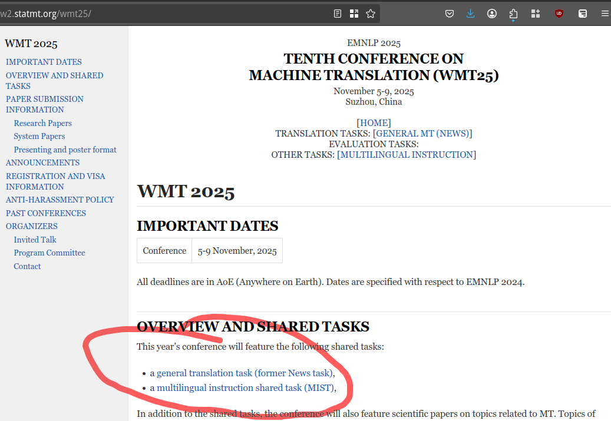
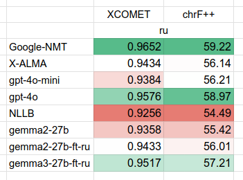

LLMs for Machine Translation are here
But not quite yet
Ghost Day | 2025 | Roman Grebennikov
Agenda
- Seq2Seq translation and Google Translate
- How to measure MT quality?
- LLMs for MT
- Open-source and DIY MT
A long time ago in a galaxy far, far away
There was a SMT - Statistical Machine Translation
Google Translate prior to 2016 (hint - it was really bad)
SMT idea
- Learn rules from parallel corpus
- Augment with grammar rules
- ...
- PROFIT
What was wrong with SMT?
TLDR: it was horrible
- Grammar is not always transferrable:
- Need for parallel texts: de➜ru was in fact de➜en➜ru
- Hard to fix errors
Rise of Transformers
- Internal interlingua representation: no hopping via en
- No explicit rules to define
- Errors: just add them to the training data
Google Translate
LLM as a translator

- No need for special MT models
- No need for parallel corpora
Traditional MT Metrics
How to judge translation quality?
- Word-based: BLEU, WER, TER, ROUGE
- Character-based: chrF, chrF++
Wait, does this match human preferences?
Parallel eval datasets: WMT
- Human-translated parallel sets, professional level
- Only 5-10 language pairs per year
Parallel eval datasets: FLORES+
- Same 2000 sentences from EN wiki
- Professionally translated to 200 languages
Issue with word-char metrics
There is a context! And char/word metrics miss it!
- Input: [source, reference, translation]
- Output: [0..1 score]
COMET & XCOMET
Train on human preferences: WMT & FLORES
OK lets benchmark
- Metric: XCOMET and BLEU/chrF++ scores
- Data: FLORES+, en -> es/tr/ar/cn/ru
- Models: GPT4, open-source MT and LLMs, Google Translate
Results
- GPT4-o has higher chrF++ than GT, is it a leak?
- Closed LLMs have MUCH higher MT metrics
Does size matter?
- TLDR: yes!
- Hi-Resource Langs: small degradation
- Low-Resource Langs: high degradation
Does prompt affect quality?
Translate the following text from English to $language.
Write only the translation text.
$source
I will give you 200$ if you correctly translate the following text
from English to $language. Write only the translation text.
$source
You`re an expert translator in $language that will be tasked with
translating a piece of text. Ensure that the meaning of the original
text is not changed. Please respond only in $language language.
Do not explain what you're doing. Write only the translation text.
Translate the following text from English to $language:
$source
Prompt types
- TLDR: do not mess with the prompt
Quantization
TLDR: int4, int8, bf16 - is there a difference?

- small models - huge impact
don't be poorPrefer bf16 if you can
Open-source NMT models
- Google: MADLAD
- Facebook: NLLB (No Language Left Behind)
- Academy: ALMA, X-ALMA
NLLB+MADLAD
- Transformer models, 10B-40B size
- Trained on semi-synthetic parallel texts
- TLDR: "open-source google translate like models"
X-ALMA
- Curse of multi-linguality: 10 LORA adapters
- Only high-quality data for training
- Llama2 fine-tune with extended vocab
Open-source results
- NMT models (NLLB+MADLAD): way below GT
- X-ALMA (llama2 based!) SOTA?
DIY MT MODEL
Idea: take gemma 2/3 and ALMA data
- Much stronger backbone (than llama2)
- Tiny dataset, only single language
Axolotl trainer
Too lazy to write training code? Axolotl!
DIY results

- yay gemma3: better results than gpt-4o-mini
- Same results as X-ALMA in 2h of work
Final words
- Bigger LLM is always better
- There's a ton of metrics for MT
- Gemma3 - ❤️